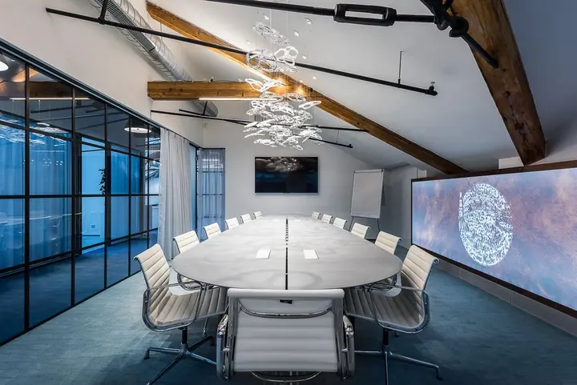
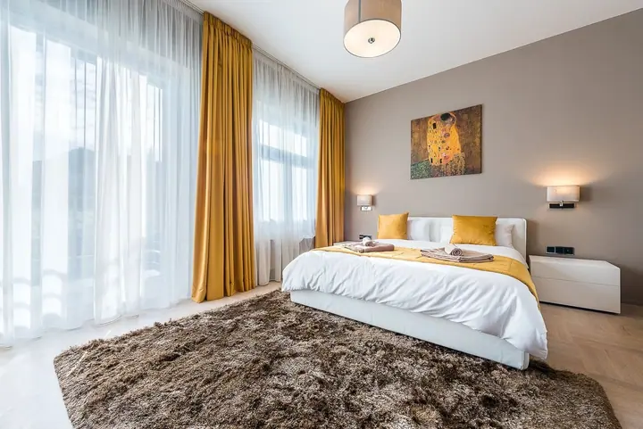
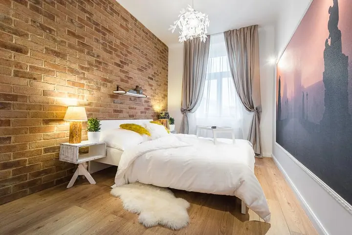
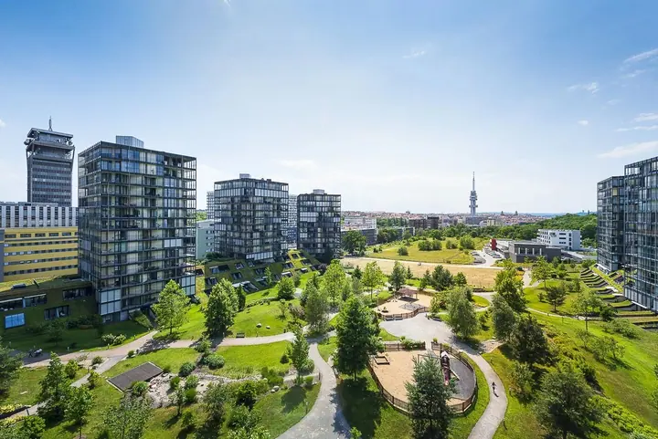
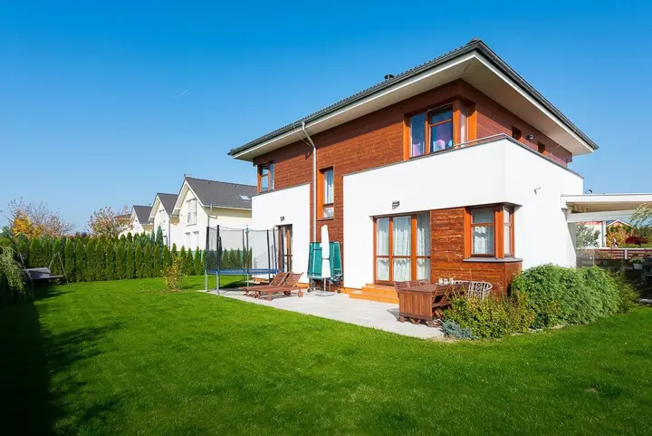

01 / 04
Fotografie interiérů pro reality
Fotím byty a domy na prodej nebo k pronájmu, aby inzerát ukázal prostor, světlo a dispozici. Realitní focení začíná od 3 500 Kč.
Zeptat se na termín→








Interiéry a architektura v plném světle
Zeptat se na termín →(01) Ahoj
Jmenuji se Ivan Svatoš a profesionálně fotografuji interiéry a exteriéry . Fotím pro majitele Airbnb, architekty a realitní kanceláře , nejčastěji v Praze.
(02) Co fotím
01 / 04
Fotím byty a domy na prodej nebo k pronájmu, aby inzerát ukázal prostor, světlo a dispozici. Realitní focení začíná od 3 500 Kč.
Zeptat se na termín→02 / 04
Fotím apartmány a pokoje pro Airbnb a další ubytování. Hosté díky fotkám vidí, jak to u vás opravdu vypadá.
Zeptat se na termín→03 / 04
Pro architekty a developery fotím interiéry i exteriéry dokončených staveb. Na fotkách je dům, okolí i práce, kterou do něj architekt dal.
Zeptat se na termín→Dále nabízím
Kromě fotek nabízím i 3D scan interiéru. Zájemci si tak prostor projdou virtuálně, ještě než přijdou na prohlídku.
↗(04) Postup
Od první zprávy po hotovou galerii.
Krok 1 z 4
Napíšete mi nebo zavoláte, o jaký prostor jde, kde je a k čemu fotky potřebujete. Podle toho se domluvíme na rozsahu a termínu.
Krok 2 z 4
Před focením vám poradím, co uklidit, co nechat a jak prostor připravit, aby na fotkách vypadal co nejlépe.
Krok 3 z 4
Přijedu na místo a nafotím interiér, případně i exteriér nebo 3D scan. Hlídám světlo, rovné linie a celkový dojem z místnosti.
Krok 4 z 4
Fotky pečlivě upravím a pošlu vám je v podobě připravené pro inzerát, web nebo portfolio.
Dobrá fotka ukáže prostor tak, jak ho vnímáte naživo.
(05) Za objektivem
Jsem fotograf interiérů a architektury z Prahy. Fotím byty na prodej, apartmány pro Airbnb, hotelové pokoje, kanceláře i celé budovy zvenku. Pokaždé mi jde o totéž: aby fotka ukázala prostor tak, jak působí, když do něj vejdete.
Každá zakázka má jiný cíl. Realitní makléř potřebuje, aby byt v inzerátu zaujal na první pohled. Majitel ubytování chce, aby se hosté cítili vítaní už při prohlížení fotek. Architekt chce, aby bylo vidět, jak dům funguje se světlem a s okolím. Podle toho volím úhly, světlo i to, co ve fotce zůstane.
Kromě fotografií nabízím i 3D scan interiéru, takže si prostor můžete projít virtuálně. Když zrovna nefotím na zakázku, věnuji se i vlastní volné tvorbě.
Ivan
Ivan Svatoš · Fotograf interiérů a architektury
Realitní focení začíná od 3 500 Kč. Konečná cena záleží na velikosti prostoru a na tom, jestli chcete i exteriéry nebo 3D scan. Napište mi a pošlu vám nabídku.
Pro realitní kanceláře a makléře, majitele Airbnb a dalšího ubytování, architekty i firmy, které chtějí ukázat své prostory.
Sídlím v Praze a většinu zakázek fotím tady. Pokud je váš prostor jinde, ozvěte se a domluvíme se.
Je to virtuální prohlídka, ve které se zájemce může prostorem volně pohybovat. Hodí se hlavně k prodeji a pronájmu nemovitostí. Podrobnosti vám rád popíšu.